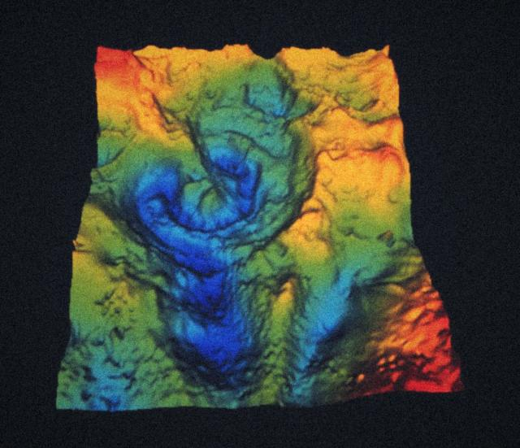
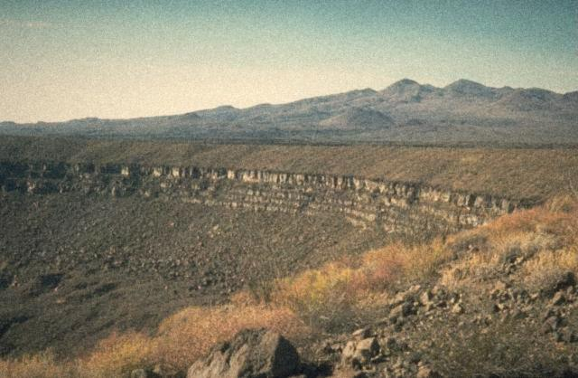
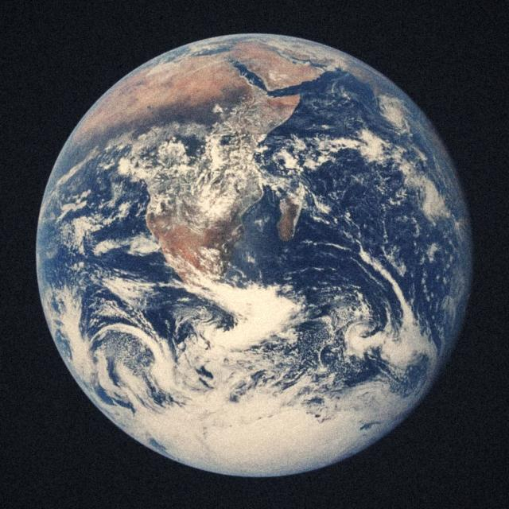
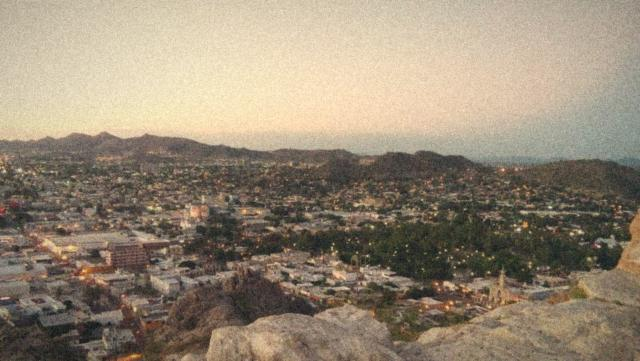

El muchacho que soñaba televisión a color
Adivina: ¿cuántos años tenía Guillermo González Camarena cuando hizo su primera cámara de televisión?
Unos 17. Nació en 1917 y dio vida a su primera cámara en 1934.
Cuando casi nadie en México había visto un televisor, este joven tapatío ya estaba armando uno. En 1938 inventó un adaptador para transmitir televisión a color, y lo patentó en México el 19 de agosto de 1940. Su idea: combinar rojo, verde y azul en secuencia.
Según Wikipedia, la historia tiene un final de película: su sistema de secuencia de colores se usó en equipos de las misiones Apolo y Voyager, porque la electrónica del sistema común era demasiado grande y pesada para una nave.
El cráter que nadie quiso oír
Adivina: ¿quiénes encontraron el cráter del asteroide de los dinosaurios?
Dos geofísicos que buscaban petróleo para Pemex, Glen Penfield y Antonio Camargo, en 1978.

Volando sobre el Golfo de México con instrumentos magnéticos, Penfield vio un círculo enorme y lo reconoció como posible cráter. Pemex pensó que era volcánico. En 1981 pudieron presentarlo en un congreso, pero casi nadie fue: muchos expertos en cráteres estaban en otra reunión.
Mientras tanto, los científicos Luis y Walter Alvarez proponían desde 1980 que un impacto había acabado con los dinosaurios, y el mundo buscaba el cráter. Casi diez años después, un periodista, Carlos Byars, conectó a Penfield con el investigador Alan Hildebrand. Con muestras de pozos de Pemex lo demostraron, y lo publicaron en 1991.
Moraleja: tener razón no basta; también hay que contarlo, y a veces la respuesta ya estaba en los archivos de alguien más.
Fuente: Wikipedia, Chicxulub crater.
El mexicano que avisó del ozono
Adivina: ¿qué ganó Mario Molina en 1995?
El Premio Nobel de Química, junto con Sherwood Rowland y Paul Crutzen.
En 1974, Molina y Rowland publicaron una advertencia en la revista Nature: los gases CFC, usados entonces en aerosoles y refrigeradores, amenazaban la capa de ozono, que nos protege de la radiación ultravioleta del Sol. Parte de la comunidad los criticó.
Tenían razón. Su trabajo llevó al Protocolo de Montreal, descrito como el primer tratado internacional que enfrentó con eficacia un problema ambiental de escala global. Molina nació en la Ciudad de México en 1943.
Moraleja: la ciencia puede cambiar lo que hace todo el planeta, aunque al principio no te crean.
Fuente: Wikipedia, Mario Molina.
Astronautas caminando por Sonora
Adivina: ¿por qué la NASA traía astronautas al desierto de Sonora en los años sesenta?
Para practicar geología antes de ir a la Luna. El terreno del Pinacate se parece a la superficie lunar.

Del 8 al 10 de noviembre de 1965, cuatro astronautas visitaron el campo volcánico de El Pinacate: William Anders, Walter Cunningham, Rusty Schweickart y C. C. Williams. En febrero de 1970 llegaron Alan Shepard y Edgar Mitchell, del Apolo 14, y Jack Schmitt, del Apolo 17.
Y aquí viene lo mejor: a Schmitt se le atribuye La canica azul, una de las fotos más famosas de la historia. La puedes ver en nuestro laboratorio. Quien la tomó había caminado antes por el desierto de Sonora.

Fuentes: NASA, entrenamiento de campo, Wikipedia, Pinacate Peaks y El Universal.
El matemático que siguió un cometa hasta Sonora
Adivina: ¿qué estudió el padre Kino antes de llegar a Sonora y hacer mapas?
Ciencias y matemáticas. Incluso le ofrecieron dar clases en una universidad de Baviera.
Eusebio Kino fue un jesuita que llegó de Europa. Mientras esperaba un barco en Cádiz, estudió el gran cometa de 1680 y publicó un libro sobre él. Después fundó misiones en Sonora y Arizona, y dibujó decenas de mapas de la región: se le reconocen 31.
Recorrió tanto la zona que ayudó a convencer a muchos de que Baja California era una península y no una isla, como se creía. Murió en 1711 en Magdalena, hoy Magdalena de Kino, y sus restos se encontraron en 1966 bajo la antigua plaza.
Investiga: busca un mapa antiguo de California. ¿Qué cambia cuando alguien va a comprobar lo que dicen los mapas?
Fuente: Wikipedia, Eusebio Francisco Kino.
Mexicanos en el espacio
Adivina: ¿en qué año llegó al espacio el primer mexicano?
En 1985. Fue Rodolfo Neri Vela, a bordo del transbordador Atlantis.
Rodolfo Neri Vela viajó en la misión STS-61-B, en noviembre de 1985. Fue el primer mexicano y también el primer latinoamericano en el espacio, según esta fuente.
Katya Echazarreta voló en junio de 2022 en un cohete de Blue Origin. Con 26 años, se convirtió en la primera mujer nacida en México en viajar al espacio. También ha organizado un campamento que simula una misión a Marte.
¿Por qué el Cerro de la Campana se llama así?
Adivina: ¿de dónde viene el nombre del cerro más famoso de Hermosillo?
De sus rocas. Tienen propiedades acústicas: al golpearlas, suenan.

Un viajero inglés, Henry George Ward, ya lo describía en su libro México en 1827: al golpear la roca cerca de la cima, suena como una campana. Dale tú:
Este sonido es de computadora, no de la roca. Fuente: Wikipedia, Hermosillo.